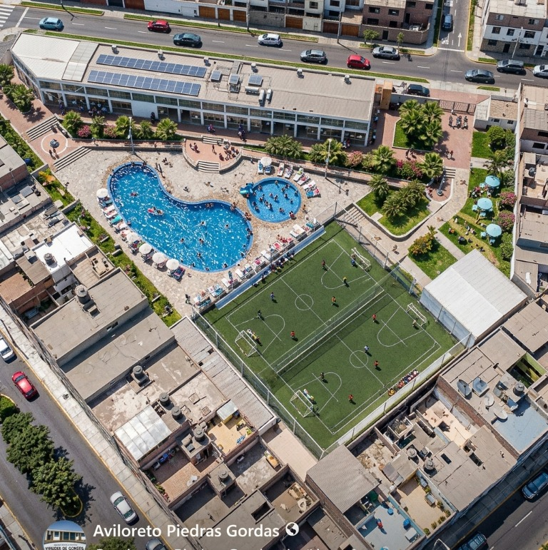
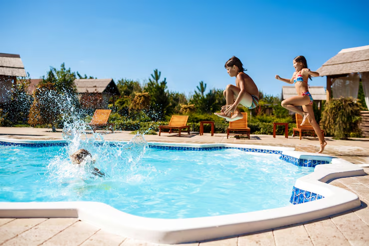
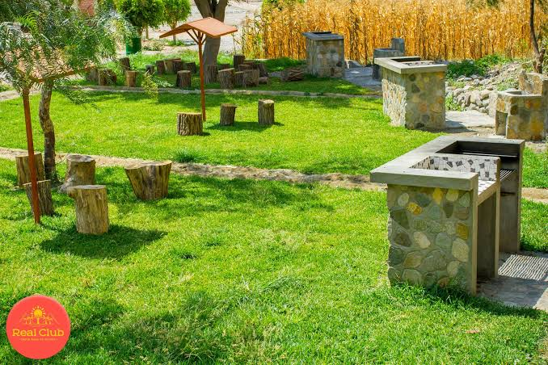
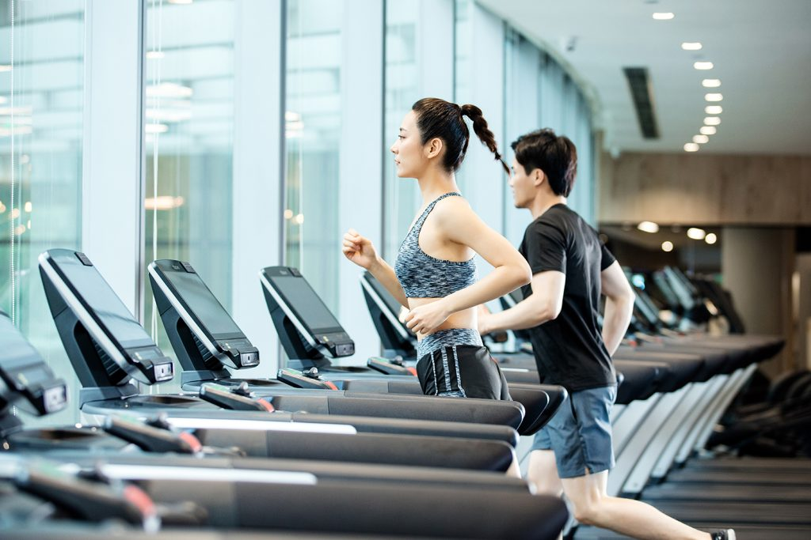
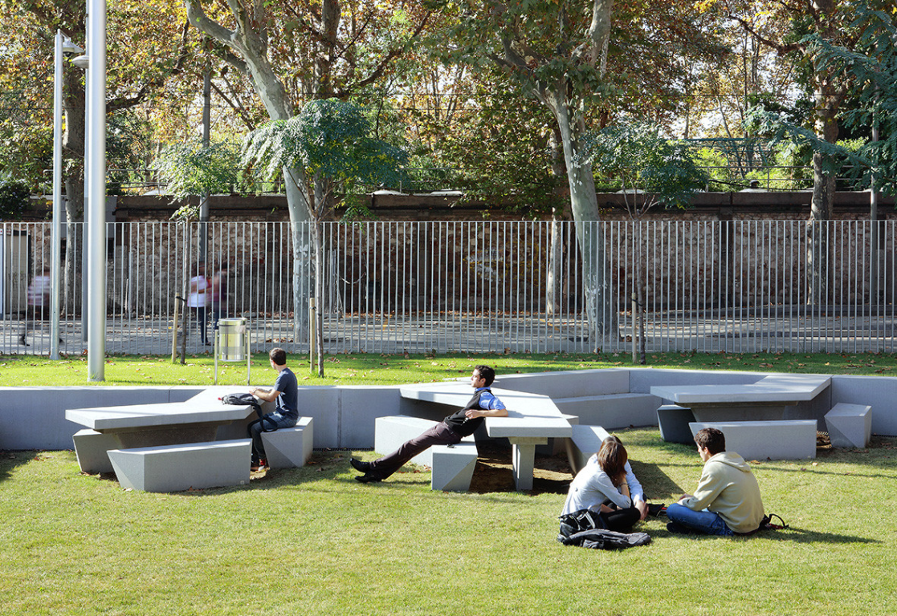

Disponible
Canchas deportivas
Grass natural para jugar, entrenar y compartir en comunidad.
Consultar disponibilidad
Vista ilustrativa · incluye espacios proyectados
El centro recreacional de AVILORETO
Canchas de grass, espacios para compartir y nuevos proyectos para nuestra comunidad.
El centro hoy
El Centro Recreacional AVILORETO se desarrolla por etapas. Hoy ya puedes disfrutar de sus canchas deportivas y acercarte a las oficinas administrativas; nuevos espacios se irán sumando en el camino.
Grass natural para jugar, entrenar y compartir en comunidad.
Consultar disponibilidad En funcionamiento
En funcionamiento
Atención administrativa de AVILORETO dentro del Centro Recreacional.
Consultar sobre las oficinasLo que viene
El proyecto contempla nuevas áreas para disfrutar en familia y celebrar momentos especiales. Se habilitarán progresivamente.
Un futuro espacio para matrimonios, bautizos, reuniones y celebraciones de nuestra comunidad.
Ver avances de obra
En proyectoUn futuro espacio para refrescarse y disfrutar los días de sol.

En proyectoUn espacio para preparar una parrilla y compartir al aire libre.

En proyectoUn espacio pensado para cuidar la salud y mantenerse en movimiento.

En proyectoJardines y lugares con bancas para relajarse y compartir al aire libre.
Las áreas futuras forman parte de la proyección del centro y aún no están disponibles.
Paso a paso
Registramos el proceso de construcción de este nuevo espacio para eventos y actividades de la comunidad.
 Registro de obra
Un espacio para celebrar lo que nos une.
Registro de obra
Un espacio para celebrar lo que nos une.
Ven a conocernos
Escríbenos para consultar sobre las canchas y el Centro Recreacional.